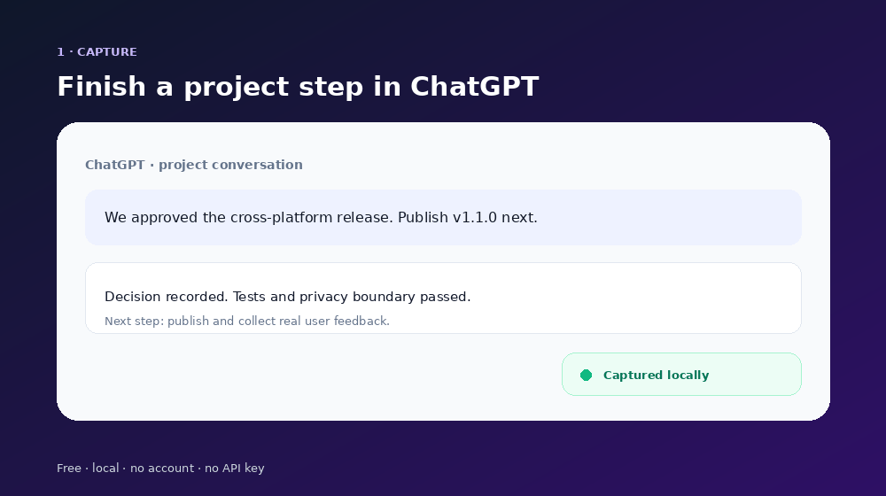

Подключите только нужный чат
Пока вы сами не нажмёте «Подключить», MaglaSync не читает этот разговор.
НЕ ТЕРЯЙТЕ КОНТЕКСТ МЕЖДУ ИИ‑ЧАТАМИ
MaglaSync сохраняет главное: что вы делаете, о чём договорились и какой следующий шаг. Откройте новый чат — и продолжайте с того же места.
Бюджет, выбранные районы, проверенные варианты и вопросы юристу — в одном контексте.
ПРОСТОЙ ПРИНЦИП
Больше не нужно искать старую переписку и вручную пересказывать всё важное.
Пока вы сами не нажмёте «Подключить», MaglaSync не читает этот разговор.
Цель, важные решения и следующие шаги останутся вместе с выбранным проектом.
Сначала вы увидите и сможете изменить контекст. Потом сами поместите его в чат и отправите.
ПОСМОТРИТЕ САМИ
MaglaSync сначала показывает краткую передачу дел отдельно. Вы читаете и изменяете её — и только потом помещаете в новый чат.

КОГДА ОСОБЕННО ПОЛЕЗНО
Начали в ChatGPT, захотели проверить идею в Claude или продолжить в Gemini.
Прошла неделя, но цель, принятые решения и следующий шаг не потерялись.
Открываете свежий разговор и продолжаете работу без большого пересказа.
Покупка, ремонт, обучение, клиентский проект или запуск продукта остаются собранными.
СПОКОЙНО И ПОД ВАШИМ КОНТРОЛЕМ
В бесплатной версии журнал хранится в вашем браузере. MaglaSync читает только те разговоры, которые вы подключили сами, и никогда не отправляет сообщения вместо вас.
Как именно устроена приватность →НАЧНИТЕ БЕСПЛАТНО
Попробуйте MaglaSync в Chrome или Microsoft Edge на компьютере. Если он действительно экономит вам время — просто продолжайте пользоваться.
Скачать MaglaSync FreeЭти возможности могут появиться в Pro. Бесплатная локальная версия при этом останется самостоятельным продуктом.
Рассказать, чего вам не хватает →КОРОТКО О ГЛАВНОМ
Нет. Каждый разговор изначально отключён. MaglaSync начинает сохранять сообщения только после того, как вы сами подключили именно этот чат к проекту.
Нет. По умолчанию MaglaSync хранит только короткий буфер из 24 последних сообщений подключённых чатов и отдельные важные обновления проекта. Расширенный локальный журнал до 400 сообщений можно включить отдельно.
Нет. Сначала он показывает контекст для проверки. Вы сами помещаете текст в пустое поле и сами нажимаете кнопку отправки.
Нет. Для бесплатной версии не нужна регистрация в MaglaSync и не нужен ключ от ИИ‑сервиса.
В локальном хранилище установленного расширения. Вы можете скачать резервную копию или удалить все данные.
С веб‑версиями ChatGPT, Claude и Gemini в Chrome или Microsoft Edge на компьютере. Другие браузеры и мобильные версии появятся после проверки основной версии пользователями.
MaglaSync Free — один локальный проект без регистрации и подписки.
Попробовать бесплатно